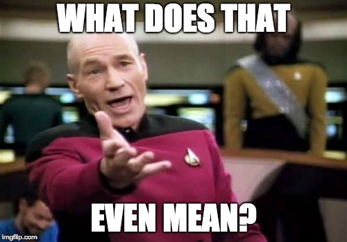
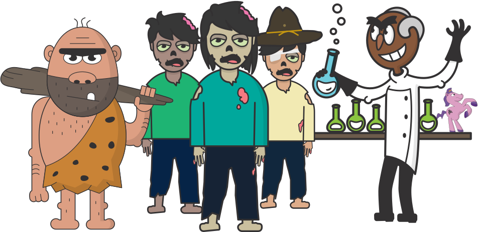
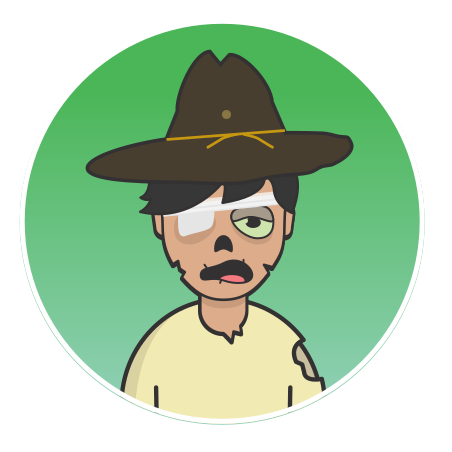
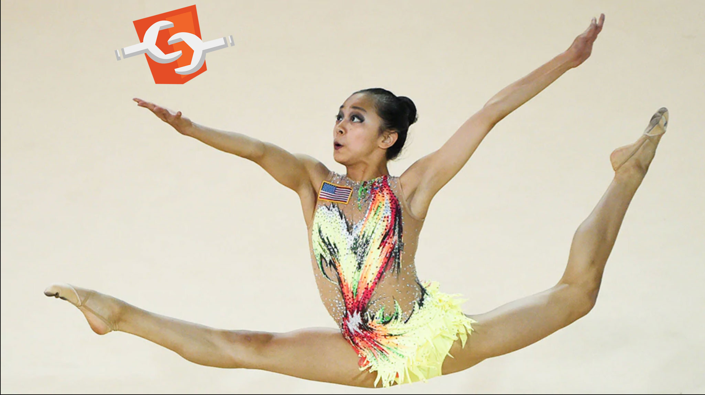
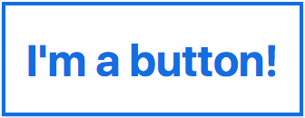
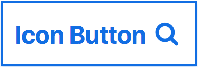
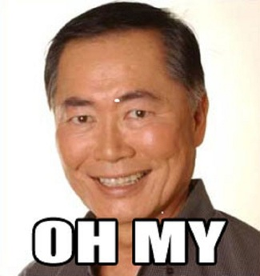

Designing accessible components
Who is this Sarah person?
- Dojo 2 widgets
- web accessibility
- herds cats
Designing accessibility? Other developers? What?
Today we're talking about:
- Component libraries
- Diverse models of user interaction
- Diverse models of developer meddling
OK but... why do I care?
Accessibility is:
- Freedom
- Privacy
- Participation
- Equality
The Curb Cut effect
(source: the Smithsonian)
(source)
- Curb cuts
- Audio captions and transcripts
- High contrast mode or night mode
- Distraction-free features
- An accessible, semantic web?
OK, accessibility. But why make a pattern library?
Meet your coworkers

“If it looks right, I'm done.”
 “What's an ARIA? I don't like opera.”
“I need these twenty obscure features, and a pony.”
Flexibility and Control
An icon button case study:
 •  •
<button type="button">I'm a button!</button>
<button type="submit">
Search
<svg role="img" aria-hidden="true">
<use xlink:href="#search"></use>
</svg>
</button>
<button type="submit">
<svg role="img" aria-labelledby="search-title">
<title id="search-title">Search</title>
<use xlink:href="#search"></use>
</svg>
</button>
Other possibilities:
aria-label- icon fonts
- a text node with some fancy
.sr-onlyCSS
None of this is easy!
Ponies, popups, oh my!
What could go wrong?
Common button use cases:
- Submit or reset a form
type="submit | reset" - Open a panel
aria-expanded="true" - Open a menu
aria-haspopup="menu" - Toggle a state
aria-pressed="true"
Uncommon button use cases
???
Who really knows best?
With too many granular details left open-ended...
... you end up with this:
<button aria-pressed="true" aria-expanded="true"
class="btn btn-open btn-pressed">
Open Accordion
<svg role="img" aria-labelledby="icon-title">
<title id="icon-title">Expand accordion</title>
<use xlink:href="#plus"></use>
</svg>
</button>
or this:
<button type="submit" aria-haspopup="true">
Tooltip
<svg role="img">
<use xlink:href="#plus"></use>
</svg>
</button>
But without enough flexibility, your component might be abandoned in favor of this:
<div role="button" onclick="ponyDance()">
Ponies for all
<img src="pony.png">
</div>
Build extensibility into:
- Visual styles
- Layout
- Child content
Provide an intuitive API for built-in defaults:
interface ButtonProperties {
type: 'submit' | 'reset' | 'button' | 'toggle'
| 'menu' | 'accordion';
disabled: boolean;
pressed: boolean;
open: boolean;
}
What can you do better now?
- Accessibility
- Internationalization
- Performance
- ...
The limits of a framework
You will never be able to:
- Write appropriate labels and alt text
- Take care of overall page structure (landmarks, heading hierarchy)
- Account for all possible use cases
Instead:
- Be realistic up front
- Provide good usage documentation
- Educate other developers about diverse interaction patterns